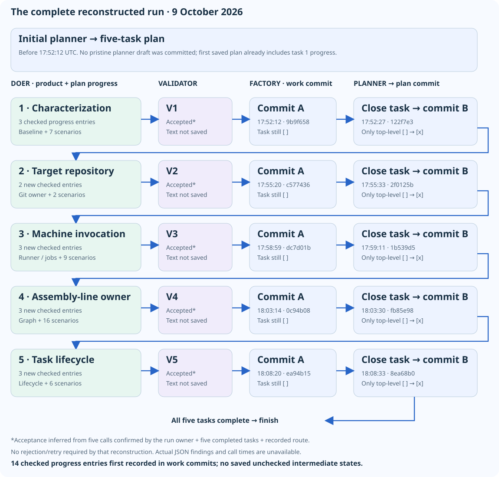

Tutor note: what did the validator actually do?
The confusion: this factory refactoring run completed five tasks and produced checked subtasks. The validator was called five times. Were those subtasks its feedback, and what did it actually review?
Git’s answer: the subtasks appear to be doer progress notes. The validator accepted each task under the recorded workflow, but its actual feedback was not retained in the available evidence.
What happened
The seed committed at 17:43:36 UTC on 9 October 2026 was:
Refactor the factory.
Your lens is validator-lens.mdCommand-line context (confirmed by the run owner): factory/validator-lens.md was also used as a seed in the command line, so the design guidance was supplied directly—not merely referenced by the committed refactoring seed.
The planner produced five tasks. For each, the reconstructed sequence is:
Doer implements and records progress → validator accepts → factory commits work → planner marks task done → factory commits that checkbox.
| Task | Checked progress entries first saved | Work commit (UTC) | Planner closes task |
|---|---|---|---|
| Characterization tests | 3: baseline, coverage, behavior preservation | 9b9f658 · 17:52:12 | 122f7e3 · 17:52:27 |
| Target Git owner | 2: extraction, tests/results | c577436 · 17:55:20 | 2f0125b · 17:55:33 |
| Machine execution/prompts | 3: extraction, coverage, verification | dc7d01b · 17:58:59 | 1b539d5 · 17:59:11 |
| Assembly-line owner | 3: extraction, coverage, verification | 0c94b08 · 18:03:14 | fb85e98 · 18:03:30 |
| Task lifecycle | 3: extraction, coverage, verification | ea94b15 · 18:08:20 | 8ea68b0 · 18:08:33 |
All five completion commits change only the top-level checkbox. The last closes the plan; the normal route then finishes.
Who created the subtasks—and when?
Fourteen checked progress entries first appear in the work commits, already marked done. Their implementation/testing content and the role instructions point to the doer, during each task’s work—not the validator or the subsequent planner completion.
For tasks 2–5, Git explicitly shows these entries being inserted into the existing plan. Task 1 is less certain: its entries arrive with the first saved plan, so the initial planner draft and first-doer edits cannot be separated.
Git gives their first saved times, not their exact creation times. No committed version shows these entries unchecked. They are not identified as validator findings.
What did the five validations say?
- Decision: the run owner confirms five calls. With five completed tasks and the committed validator-gated route, that implies one acceptance per task, without retries—assuming that configuration was used.
- Comments/findings: unknown. No matching review transcript or console capture was found. The factory printed results to stdout; Git did not retain them.
- Important trap: “no previous validator findings were supplied” in later doer notes does not prove empty reviews. The factory resets findings between tasks. An accepted response could also contain nonempty findings.
So we can reconstruct acceptance, but cannot quote the feedback or judge its depth.
Two questions for the tutor
1. Which lens should have governed review? The seed requests the responsibility-driven design file validator-lens.md, but the committed validator configuration says testability. Did the validator reconcile these, and should its selected lens and rationale be recorded? 2. What evidence should acceptance leave? Tests improved to 40 passing scenarios, but 45 inherited scenarios stayed undefined, so the full suite still exited 1. Did the validator explicitly accept preservation of that baseline? Without its feedback, we cannot tell.
This is not evidence that the validator did nothing. Its decisions gated completion; its reasoning is the missing part.

Evidence
git log --reverse -p 643e667..8ea68b0 -- factory/.factory/plan.md
git show 643e667:factory/src/main/kotlin/Main.ktThe seed text was recovered; the exact initiating chat/launch command was not. Historical objects were inspected through 0606af3; no historical test rerun was performed.